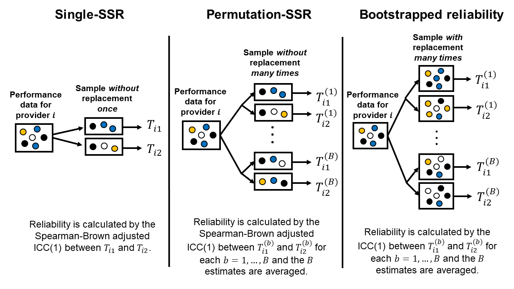
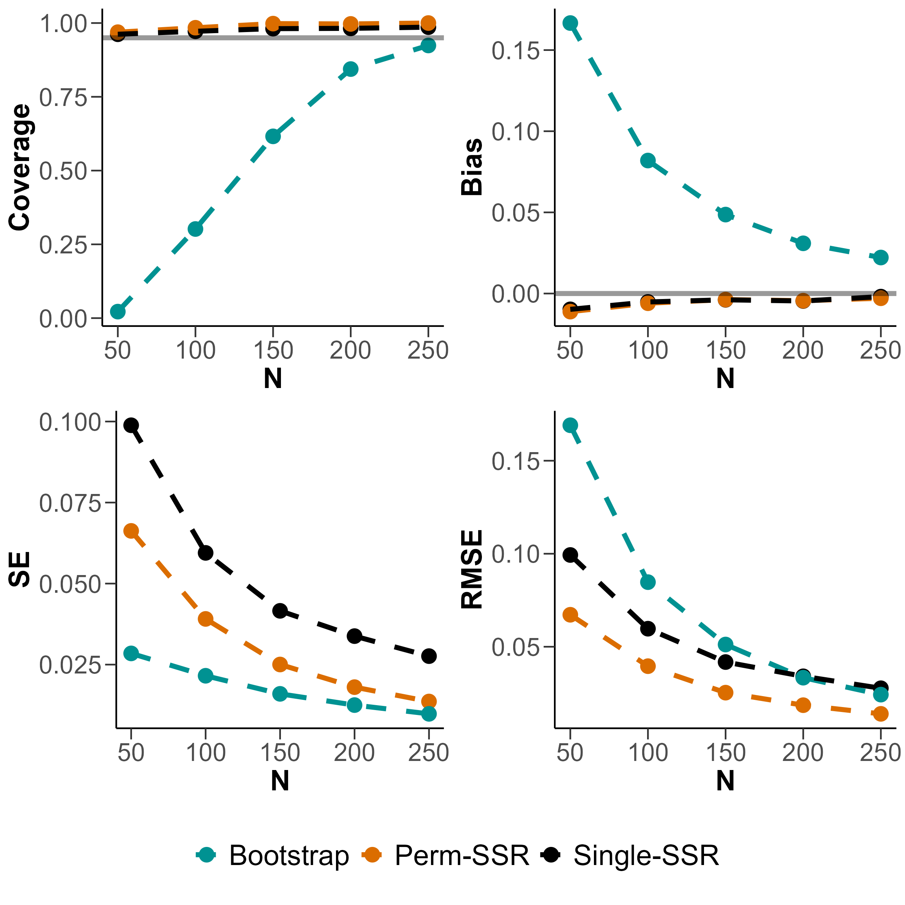
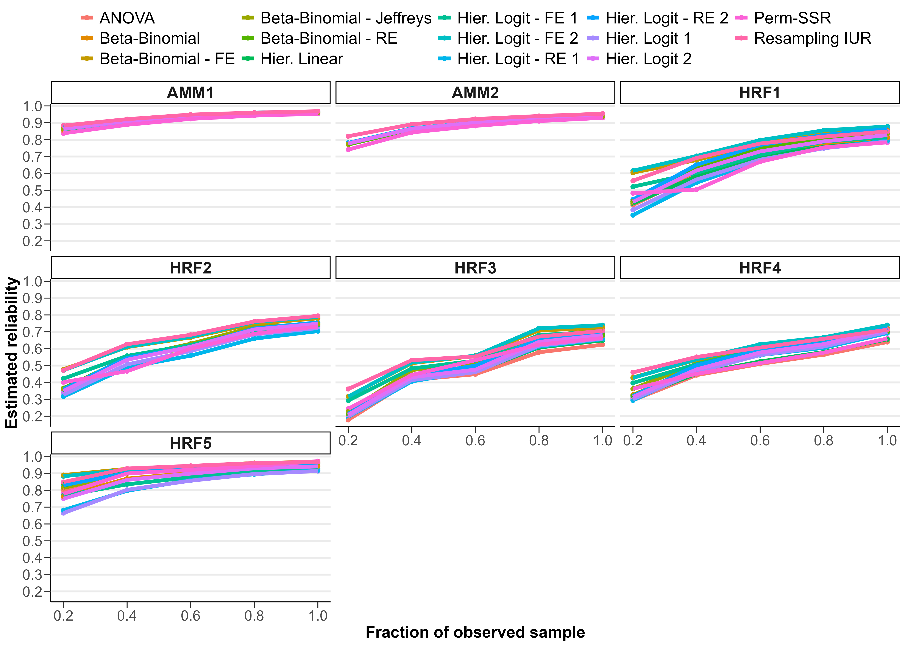
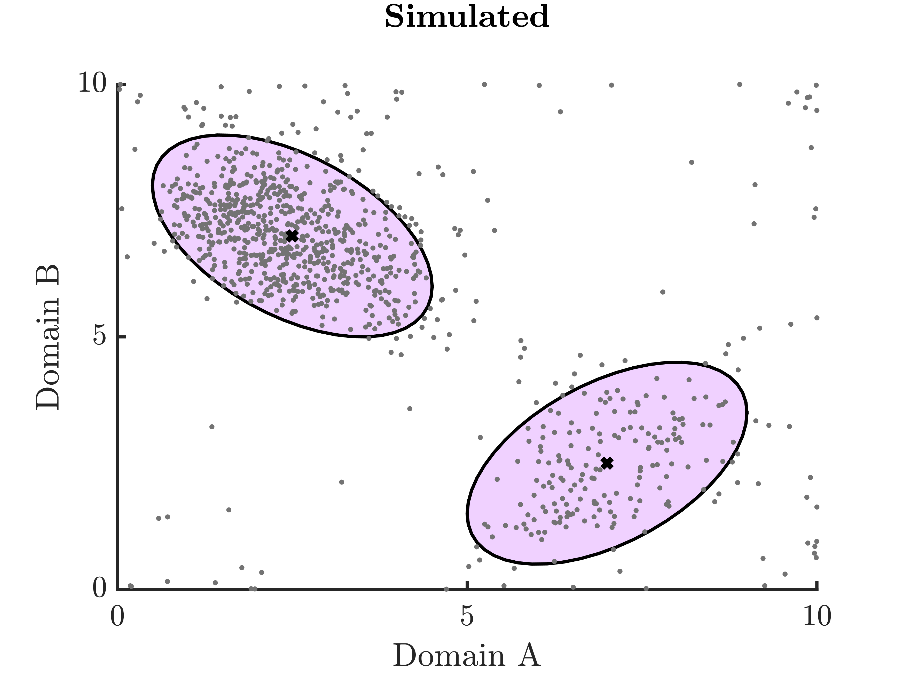
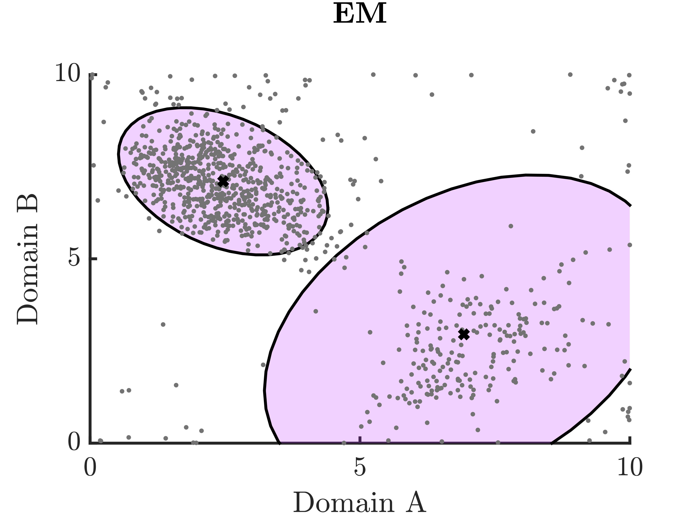
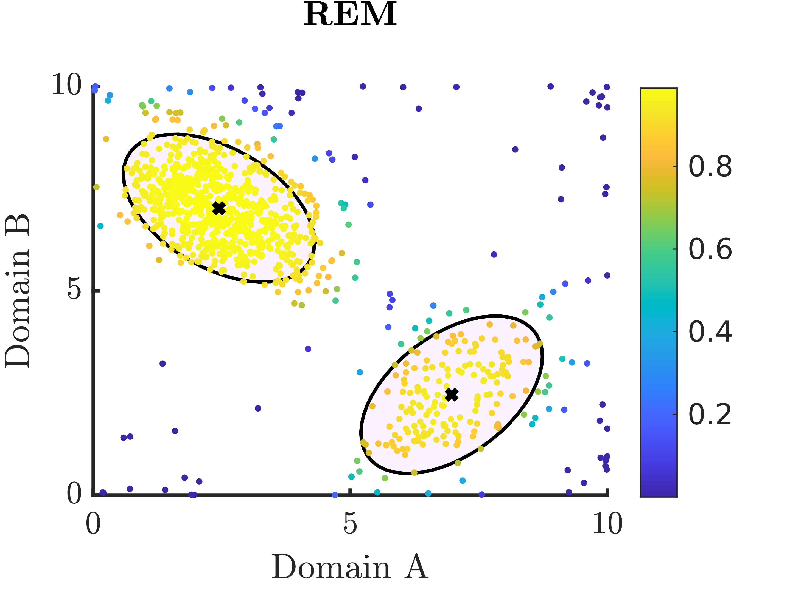

Research
- Reliability of health care quality measures
- Variation in health care quality and intervention effectiveness
- Algorithmic bias in medicine
Reliability of health care quality measures
Health care quality can vary considerably across providers and health systems. Differences in quality measures between providers might be due to chance rather than true differences in quality of care. Reliability quantifies the stability of a measurement if we were to somehow repeat the measurement again in another sample from the sample population of patients and providers in the same time period. Reliability is a key scientific criterion by which prospective measures are evaluated before they are used in CMS programs.
Relevant publications:
- Nieser KJ, Tancredi DJ, Harris AHS. The unreliability of two publicly reported outcome quality measures for characterizing health care quality within the Veterans Health Administration. Health Serv Res. 2025 Oct 01;e70050. doi: 10.1111/1475-6773.70050.
- Nieser KJ, Harris AHS. Comparing methods for assessing the reliability of health care quality measures. Stat Med. 2024 Oct 15;43(23):4575-4594. doi: 10.1002/sim.10197.
- Nieser KJ, Harris AHS. Split-sample reliability estimation in health care quality measurement: Once is not enough. Health Serv Res. 2024 Aug;59(4):e14310. doi: 10.1111/1475-6773.14310.
Summary:
-
We conducted simulation studies of the split-sample method for estimating reliability and found that estimates can be very sensitive to the random split of the data in low sample size and low performance variability settings. We show that averaging many split-sample estimates can reduce the variability of the split-sample estimate of reliability.
 
-
We reviewed various methods for estimating reliability of health care quality measures and compared estimates in the case of two mental health quality measure sets.
We found that estimates can differ substantially, especially when sample sizes are small. More work is needed to understand which methods should be preferred in which situations.

- Estimation of the proportion of overall variance in an outcome that is attributable to between-entity variation is less straightforward when outcomes are binary (e.g., surgical complication occurs or not) compared with continuous, normally distributed outcomes. A latent scale approach to hierarchical logistic regression is often employed which leads to a fixed within-entity variance: \(\pi^2 / 3\), the variance of a standard logistic distribution. We demonstrated that this approach leads to reliability estimates that are higher than estimates from a delta method approximation or from a split-sample approach, using data from two outcome quality measures: risk-standardized complication rates following hip and/or knee arthroplasty and risk-standardized 30-day mortality rates following hospitalizations for heart attacks.
Variation in health care quality and intervention effectiveness
Relevant publications:
- Nieser KJ, Chen C, Harris AHS, Wagner TH, Schmidt EM. Purchasing Versus Providing Care at the VHA: Quality Differences in Follow-Up After Psychiatric Hospitalization. Med Care. 2026 Feb 1;64(2):89-97. doi: 10.1097/MLR.0000000000002271.
- Nieser KJ, Harris AHS, Binswanger IA, Clark SC, Finlay AK. Legal-involved veterans are less likely to receive guideline-concordant colorectal cancer screening. BMC Health Serv Res. 2025 Mar 4;25(1):333. doi: 10.1186/s12913-025-12490-6.
- Harris AHS, Eddington H, Shah VB, Shwartz M, Gurewich D, Rosen AK, Quinteros B, Wilcher B, Nieser KJ, Jones G, Wu JT, Morris AM. Statistical Methods to Examine Racial and Ethnic Disparities in the Surgical Literature: A Review and Recommendations for Improvement. Ann Surg. 2024 Dec 1;280(6):960-965. doi: 10.1097/SLA.0000000000006440.
- Harris AHS, Liu P, Breland JY, Nieser KJ, Schmidt EM. Differences across race and ethnicity in the quality of antidepressant medication management. Health Serv Res. 2024 Oct;59(5):e14347. doi: 10.1111/1475-6773.14347.
- Green RK, Nieser KJ, Jacobsohn GC, Cochran AL, Caprio TV, Cushman JT, Kind AJH, Lohmeier M, Shah MN. Differential Effects of an Emergency Department-to-Home Care Transitions Intervention in an Older Adult Population: A Latent Class Analysis. Med Care. 2023 Jun 1;61(6):400-408. doi: 10.1097/MLR.0000000000001848.
Algorithmic bias in medicine
Algorithms are used pervasively in clinical decision-making. While this has many advantages (e.g. consistency, efficiency, data-driven), how do we know if algorithms are perpetuating social biases and how can we reduce unfairness?
Relevant publications:
- Nieser KJ, Ortiz-Torres BS, Zayas-Cabán G, Cochran A. REMLA: An R package for robust expectation-maximization estimation for latent variable models. SoftwareX. 2025 May 1;30:102112. doi: 10.1016/j.softx.2025.102112.
- Nieser KJ, Cochran AL. Quantifying and reducing inequity in average treatment effect estimation. BMC Med Res Methodol. 2023 Dec 15;23(1):297. doi: 10.1186/s12874-023-02104-2.
- Nieser KJ, Stowe ZN, Newport DJ, Coker JL, Cochran AL. Detection of differential depressive symptom patterns in a cohort of perinatal women: an exploratory factor analysis using a robust statistics approach. EClinicalMedicine. 2023 Mar;57:101830. doi: 10.1016/j.eclinm.2023.101830.
- Nieser KJ, Cochran AL. Addressing heterogeneous populations in latent variable settings through robust estimation. Psychol Methods. 2023 Feb;28(1):39-60. doi: 10.1037/met0000413.
Summary:
-
In many health studies, select population subgroups—such as racial and ethnic minorities, older adults, and adults with less than a high school education—consistently make up a smaller proportion of the data sample compared to others. This has led to study findings (and consequently medical decisions) that generalize well for some sociodemographic subgroups and poorly for others.
We showed under some assumptions that the difference in mean-squared error of sample average treatment effect estimates for two subgroups is equal to the product of (1) the difference in subgroup sample proportions and (2) the average squared difference between subgroup treatment effects. The formula derived in our paper could be used to inform design, analysis, and interpretation of studies in heterogeneous populations.
We developed a reweighting approach for adjusting sample representation in a way that lowers mean-squared error of subgroup-specific effect estimation on average, which we call representation-adjusted average treatment effect (RATE) estimation. This approach enables each subgroup to leverage information from the full sample rather than the subgroup's own data only. This reduces statistical noise at the expense of some bias.
-
In psychiatry and clinical psychology, models are used to make sense of psychological symptom patterns to inform diagnostic categories and the development of screening and measurement instruments. However, these models might not describe all individuals equally well.
We proposed a robust estimation alternative to the EM algorithm (commonly used in latent variable model estimation), which we call REM (robust expectation-maximization algorithm), to detect subsets in a data sample that are poorly described by a fitted model. This can help researchers understand and work towards improving the generalizability of their models.
This approach is built on replacing the likelihood function with a mixture between the likelihood function and an unknown process, represented by \(\epsilon\), which we treat as a hyperparameter:
\[ f_{X|\theta}(x) \rightarrow \gamma f_{X|\theta}(x) + (1-\gamma)\epsilon \]In the simple 2D example below, the dark blue dots in the REM plot on the right denote individuals with reported symptom patterns that do not neatly fit into either of the two major subgroups, shown by the ellipses.
  
-
We applied the REM method described above to postpartum depressive symptom data to detect and describe differential depressive symptom patterns and examine associations with demographics and psychiatric histories.
About 10% of our sample did not fit the exploratory factor analysis model well. This subset was more likely to have severe depressive symptoms, particularly regarding negative self-judgement and thoughts of self-harm. This subset was also more likely to have a history of childhood trauma and/or a history of social anxiety disorder. This information could inform the tailoring of screening and treatment stratgies for postpartum depression.